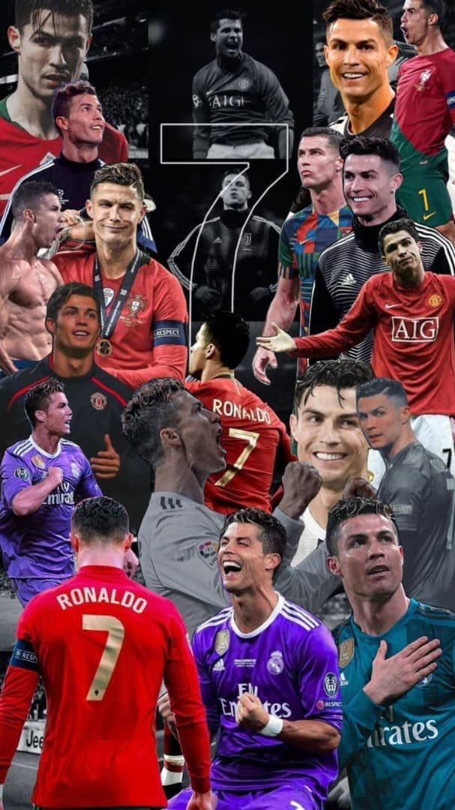
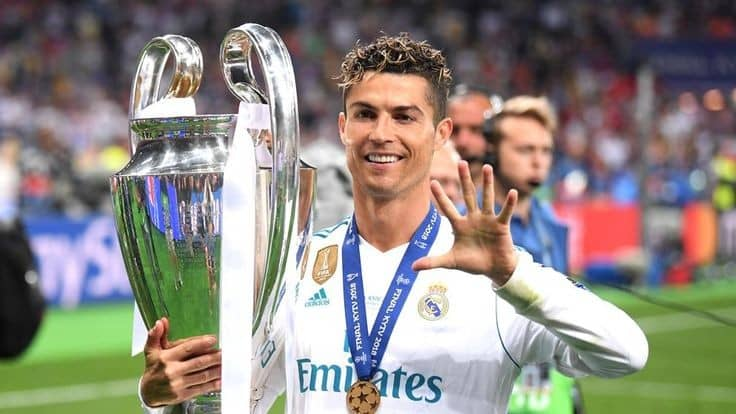
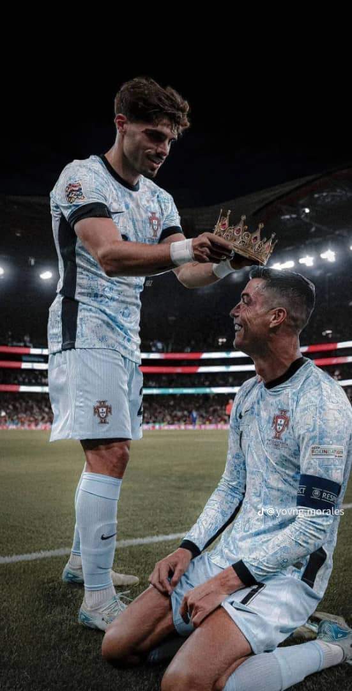

Cristiano Ronaldo es un futbolista portugués nacido el 5 de febrero de 1985 en Funchal, Madeira. Desde muy joven mostró un talento excepcional para el fútbol, lo que lo llevó a unirse a las divisiones juveniles del Sporting de Lisboa
Cristiano Ronaldo comenzó su carrera profesional en el Sporting de Lisboa en 2002, donde destacó rápidamente por su talento. En 2003, fue fichado por el Manchester United, donde ganó varios títulos importantes hasta 2009. Ese año, se trasladó al Real Madrid, donde tuvo un éxito monumental hasta 2018, rompiendo numerosos récords. Luego, se unió a la Juventus en Italia, donde jugó hasta 2021, y regresó al Manchester United por segunda vez. En 2022, se trasladó al Al Nassr en Arabia Saudita, donde sigue jugando actualmente
Cristiano Ronaldo ha cosechado una impresionante cantidad de títulos y récords a lo largo de su carrera. Ha ganado cinco Balones de Oro y ha sido el máximo goleador en múltiples competiciones, incluyendo la UEFA Champions League, donde se convirtió en el máximo goleador histórico. A nivel de clubes, ha ganado numerosos títulos de liga en Inglaterra, España e Italia, así como varias Champions League y Copas del Rey. Con la selección de Portugal, se coronó campeón de la Eurocopa 2016 y la Liga de Naciones 2019. Además, es el primer jugador en anotar más de 900 goles en partidos oficiales y sigue siendo uno de los máximos goleadores en la historia del fútbol. Su legado está marcado por su consistencia, habilidad y dedicación al deporte.
Cristiano Ronaldo se ha consolidado como el mejor jugador del mundo, dejando una huella imborrable en la historia del fútbol. Ha conquistado las cuatro ligas más importantes de Europa: la Premier League, La Liga, la Serie A y la Bundesliga, demostrando su versatilidad y adaptación en diferentes entornos competitivos. Su habilidad para marcar goles, su ética de trabajo y su deseo constante de superarse lo han llevado a alcanzar éxitos inimaginables CR7.
